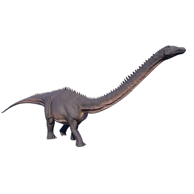

Useful Website
Diplodocus is one of the biggest sauropods that has ever existed, at around 12 tonnes in weight and 24m in length. This gentle giant is a herbivore and uses its long neck to feed from tall trees (in fact, Diplodocus’ teeth are strong enough to strip bark) as well as plants and shrubs at ground level, while its vast size discourages predators from attacking.
